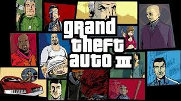

GTA 3

About the game
Grand Theft Auto III is a 2001 action-adventure game developed by DMA Design and published by Rockstar Games. It is the first main entry in the Grand Theft Auto series since 1999's Grand Theft Auto 2. Set within the fictional Liberty City (loosely based on New York City), the story follows a silent protagonist, Claude, who, after being betrayed and left for dead by his girlfriend during a robbery, embarks on a quest for revenge that leads him to become entangled in a world of crime, drugs, gang warfare, and corruption. The game is played from a third-person perspective and its world is navigated on foot or by vehicle. The open world design lets players freely roam Liberty City, consisting of three main islands.
Development was shared between DMA Design, based in Edinburgh, and Rockstar, based in New York City. Much of the development involved transforming popular elements from the Grand Theft Auto series into a fully 3D world for the first time. The game was delayed following the September 11 attacks to allow the team to change references and gameplay deemed inappropriate. It was released in October 2001 for the PlayStation 2, in May 2002 for Microsoft Windows, and in October 2003 for the Xbox.
Grand Theft Auto III received critical acclaim, with praise particularly directed at its concept and gameplay. However, the game also generated controversy, with criticism directed at its depictions of violence and sex. It became the best-selling video game of 2001, and has sold over 14.5 million copies since. Considered by many critics as one of the most significant titles of the sixth generation of video games and a landmark game in the open world concept, it is often listed among the greatest video games. It won several year-end accolades, including Game of the Year awards from several gaming publications. Since its release, it has received ports to many different gaming platforms. An enhanced version of the game was released on mobile platforms in 2011, for the game's tenth anniversary. Its successor, Grand Theft Auto: Vice City, was released in October 2002, and two prequels, Advance and Liberty City Stories, were released in 2004 and 2005, respectively.
Gameplay
Grand Theft Auto III is an action-adventure game played from a third-person perspective. Players complete missions—linear scenarios with set objectives—to progress through the story.[4] It is possible to have several missions available at a time, as some missions require players to wait for further instructions or events.[5] Outside of missions, players can freely roam the game's open world, and have the ability to complete optional side missions. Liberty City is composed of three boroughs: Portland, Staunton Island, and Shoreside Vale; the latter two areas become unlocked as the player progresses through the storyline.[6]
Players may run, jump or use vehicles to navigate the game's world.[7] In combat, auto-aim can be used as assistance against enemies.[8] Should players take damage, their health meter can be fully regenerated through the use of health pick-ups. Body armour can be used to absorb gunshots and explosive damage, but is used up in the process.[9] When health is entirely depleted, gameplay stops and players respawn at the nearest hospital, at the expense of losing armour, weapons, and an amount of money.[10]
If players commit crimes while playing, the game's law enforcement agencies may respond as indicated by a "wanted" meter in the head-up display (HUD). On the meter, the displayed stars indicate the current wanted level[11] (for example, at the maximum six-star level, efforts by law enforcement to incapacitate players become very aggressive).[12] Law enforcement officers will search for players who leave the wanted vicinity. The wanted meter enters a cooldown mode and eventually recedes when players are hidden from the officers' line of sight.[11]
The game lets players control the mute criminal Claude.[13] During the story, Claude meets various new characters from gangs. As players complete missions for different gangs and criminal organisations, fellow gang members will often defend players, while rival gang members will recognise players and subsequently shoot on sight.[14] While free roaming the game world, players may engage in activities such as a vigilante minigame, a fire fighting activity, a paramedic service and a taxi cab service.[11][15] Completion of these activities grants players with context-specific rewards; for example, completing the vigilante mission allows players to bribe police after committing a crime.[16]
Combat in Grand Theft Auto III was reworked to allow players to perform drive-by shootings by viewing sideways in a car.
Players use melee attacks, firearms and explosives to fight enemies. The firearms include weapons such as the Micro Uzi, an M16 rifle and a flamethrower.[6] The game's three-dimensional environment allows a first-person view while aiming with the sniper rifle, rocket launcher and the M16 rifle. In addition, the game's combat was reworked to allow players to commit drive-by shootings by facing sideways in a vehicle.[4] The game gives players a wide variety of weapon options—they can be purchased from local firearms dealers, found on the ground, retrieved from dead enemies, or found around the city.[9]
Plot
In 2001, small-time criminal Claude is betrayed by his girlfriend Catalina (voiced by Cynthia Farrell) during a bank heist outside Liberty City. Left for dead, Claude is arrested, but escapes during his transfer to prison when members of the Colombian Cartel ambush his transport to abduct another prisoner. During his escape, Claude befriends fellow convict and explosives expert 8-Ball (Guru), who gives him a place to stay and introduces him to the Leone Mafia family for work. After assisting them with various operations, including winning a war against a local group of Triads, he earns the respect of Don Salvatore Leone (Frank Vincent). Learning that the Cartel are manufacturing a new street drug to fund their expansion into Liberty City, Salvatore orders Claude to destroy their floating drug lab, which he does with 8-Ball's help.
Later, Salvatore instructs Claude to deal with a minor problem, but his trophy wife Maria (Debi Mazar), who took a liking into Claude, reveals it to be a set-up. Claiming that Salvatore has become paranoid and wants to kill Claude because she lied to him that they were having an affair, Maria leaves with Claude for Staunton Island to avoid Salvatore's wrath. After assassinating Salvatore to cut his ties with the Leone family, Claude finds new employment for the Yakuza, led by Maria's friend Asuka Kasen (Lianna Pai) and her brother Kenji (Les J.N. Mau). Later, he also begins working for corrupt LCPD detective Ray Machowski (Robert Loggia), whom he eventually helps flee the city, and media mogul Donald Love (Kyle MacLachlan), who hires Claude to assassinate Kenji under the guise of a Cartel attack to start a gang war that will allow him to obtain real estate for his businesses. During another job for Love, Claude encounters Catalina, now the leader of the Cartel, at a construction site, but she escapes from him.
Blaming the Cartel for her brother's death, Asuka has the Yakuza seize the site, and tortures Catalina's partner Miguel (Al Espinosa), whom she left behind, for information on the Cartel's operations, which Claude subsequently hits, earning Catalina's wrath. In retaliation, she murders Asuka and Miguel, and kidnaps Maria, ransoming her for $500,000. When Claude meets with Catalina to hand over the ransom payment, she double-crosses him once again, and leaves him to be killed, but he escapes from the trap and pursues Catalina, eventually shooting down her helicopter. With Maria saved, she and Claude flee the scene, though as she begins to complain about what happened to her, a gunshot rings out, and Maria's voice is silenced.[b]
Development
The core development team of Grand Theft Auto III consisted of about 23 people at DMA Design in Edinburgh, who worked closely with publisher Rockstar Games in New York City.[6] By early 2001, the team had designed the city, cars, and some weapons.[17] An online multiplayer mode was initially planned for the game, but was ultimately dropped due to time and resource limitations.[18] Producer Leslie Benzies described Grand Theft Auto III as a "crime simulation game".[6] The game was released for the PlayStation 2 on 22 October 2001 in North America.[19] When porting the game to Microsoft Windows, the team delayed it from the PlayStation 2 release in order to ensure quality, citing issues with the simultaneous platform release of previous Grand Theft Auto games.[20]
Open world and design
Grand Theft Auto III is considered to be the first 3D game in the series,[21] using Criterion Games' RenderWare game engine.[22] When designing the game, the development team expanded upon concepts introduced in the previous Grand Theft Auto games. Benzies stated that the intention was to recreate the "freedom and diversity" of the previous games in a "living, breathing 3D world", using the power of the PlayStation 2 to do so.[6] The console's ability to use DVDs, an improvement over the PlayStation's limit to CDs, allowed the team to store more data, such as animations, music and environments.[23] Despite this, the team found it difficult to fit the game into the PlayStation 2's 32 megabytes of RAM, due to the scale. The game's size also created difficulties for the testers, due to the variety of options.[5] Benzies felt that creating a living city was the "underlying principle" of the game's concept during development.[6] Executive producer Sam Houser felt that the game's 3D element allowed the "chemistry of the team [to come] together perfectly for the first time".[24]
A major difficulty the team encountered was converting all game elements into a fully 3D world, including the sound and radio stations, as well as designing and voicing the non-player characters, due to the amount that existed within the open world;[25] producer Dan Houser said that there was about 8,000 lines of recorded dialogue in the game,[25] while audio programmer Raymond Usher estimated about 18,000.[26] The basic technical elements of the game began to work together in mid-2000, with a carjacking mechanic prototype and stable streaming model.[27] Streaming was initially intended to be reserved for music and map geometry, but other elements were eventually included when it became apparent to the team as more data was entered.[5]
When designing the game world, the team initially created a "hybrid city", which producer Dan Houser describes as "a post industrial Midwest slash east coast generic" city.[28] Upon developing within this game world, the team realised that basing the design on a real location meant "you have a lot of things you can say about it".[28] As a result, the team redesigned Liberty City, which had been previously featured in Grand Theft Auto (1997), basing it loosely on New York City.[28] The city is broken into three islands: an industrial section representing Brooklyn and Queens, a commercial centre resembling Manhattan, and suburbs similar to New Jersey.[29] The islands unlock as the story progresses; the team wanted players to "start out feeling poor and work to being richer".[30] Dan Houser describes Liberty City as a "hybrid of a generic American city", including Chicago, Pittsburgh, Detroit, New York, and Philadelphia.[30] He felt that the parallel realism of the world allowed the team to make more social commentary than previously.[18] Sam Houser cited films and shows like Heat (1995) and The Sopranos (1999–2007) as inspiration for the setting, and wanted to emulate them in the game.[31] He also cited the influence of The Legend of Zelda, Super Mario 64 and the film Goodfellas (1990), describing Grand Theft Auto III as "a cross between a gangster movie and an RPG".[32][33]
Story and characters
The team developed the story and design simultaneously. "We use the story to expose the mechanics, and we use the mechanics to tell the story," said Dan Houser.[17] Houser found it difficult to create the narrative, as the game is so strongly focused on player freedom. He wanted the story to be more nuanced and interesting than the generic "rise and fall and rise again of a superhero bad guy".[30] The game's script was also focused on mission objectives, attempting to implement high amounts of interactivity.[27] Houser felt that each mission is "its own short story", and part of an "overarching story".[17] Houser and co-writer James Worrall drew influence from mob films, and the mafiosi featured in films by Martin Scorsese. When writing the story, Houser and Worrall regularly met with the designers, and filled a room with post-it notes to reconstruct the story components to shape the game.[27]
Many of the game characters were animated using motion capture, filmed at a rented studio at the Brooklyn Navy Yard,[31] though this was limited by technical restraints. The character movement was also treated as being cinematic, though limited polygons heavily inhibited this.[34] Animating non-player characters entering and driving cars proved to be difficult for the team, due to the variety of vehicle designs. "It involved chaining together dozens of different animations and altering key frames in code," recalled software engineer Alan Campbell.[18] The team used varying camera angles when animating the game's cutscenes, in order to evoke different emotions.[35] For the voice acting, the team wanted "natural, subtle performances", which proved difficult as many of the actors "had in their head the idea that because video games are animated their performances needed to be animated", explained motion capture director Navid Khonsari.[34]
The game's playable protagonist is unnamed in the game,[19] and his name is not officially revealed as Claude until his appearance in Grand Theft Auto: San Andreas (2004). He is a silent protagonist, never speaking throughout his appearances. The team decided to make Claude silent primarily because it "did not seem like a major issue", due to the other challenges faced during development, and also partly to allow players to identify with the character, as the character will be who the players want him to be.[13] The developers did not have "any one single inspiration" for Claude; they liked the idea of a "strong, silent killer, who would be juxtaposed with all of these neurotic and verbose mobsters".[13]
Sound design
Grand Theft Auto III features about three-and-a-half hours of in-game radio material. For the music, the team sought a broad diversity, to recreate the real sensation of skipping through radio stations, reflecting the gangster movie culture invoked by the game. The team used the talk radio stations to add character to the city, and provide a "unique take on American life";[36] Sam Houser described it as "a very iconoclastic look at America".[32] The team used real DJs to portray those on the radio. In doing so, the team wrote unusual dialogue for the DJs, seeking the effect of "high production values and absurd content". Music director Craig Conner assembled the assets of the radio station—music, advertisements, DJ dialogue, station imaging.[36]
Cuts and changes
[We] felt that a full content review of all our titles and the marketing materials we use to represent them was absolutely necessary for us ... we have come across certain small contextual references that we were no longer comfortable with, as well as a couple of very rare gameplay instances that no longer felt appropriate to us.
— Terry Donovan, Rockstar managing director, IGN, 19 September 2001[39]
Prior to the initial release, several modifications were made to the game. While changes are frequent during game development, the changes in Grand Theft Auto III were noted to be around the time of the September 11 attacks, which led to speculation that some changes were motivated by the attacks. On 19 September 2001, Rockstar delayed the game's release by three weeks, citing the attacks as an influencing factor in the delay.[39] "Everyone had someone who had an uncle or brother [who was impacted by the attack]", said Paul Eibeler, then-president of distributor Take-Two Interactive.[40]
One of the changes made shortly after the September 11 attacks was the colour scheme of the police cars; the original colour scheme of blue with white stripes specifically resembled that of the New York City Police Department. It was changed to black-and-white designs common among several police departments in the United States, such as Los Angeles and San Francisco. Other changes include altering the flight path of a plane to avoid appearing to fly into or behind a skyscraper, removing a mission referencing terrorists, as well as some changes to pedestrian dialogue and talk radio.[41] Another cut to the game is the character of Darkel, a revolutionary urchin who vowed to bring down the city's economy. When references to Darkel were found in the game's code, speculation arose that the character was related to 9/11, however Dan Houser explained that the character had been cut "months before [release]".[41] There are also reports and previews stating that the game featured school children as pedestrians prior to release,[42] although Rockstar has dismissed such rumours as "nonsense".[37]
Rockstar stated that the game was "about 1% different" after 9/11, and that the biggest change was the cover art. They felt that the original cover, which was ultimately released as the cover in Europe, felt "too raw" after 9/11, and was changed into what became the "signature style" of the series.[37] Sam Houser claimed that the cover was designed in an evening, and was instantly preferred over the original cover.[38] The cover was inspired by the movie posters for 1960s films, such as The Thomas Crown Affair (1968).[37
Inital release
Grand Theft Auto III was released to critical acclaim. Metacritic calculated an average score of 97 of out 100, indicating "universal acclaim", based on 56 reviews. It is the sixth-highest rated game on Metacritic, tied with a number of others.[51] Reviewers liked the game's sound,[4][46][49] gameplay,[44][46][52] and open world design,[4][10][48] though some criticism was directed at the controls.[11][47][50] Tom Bramwell of Eurogamer called Grand Theft Auto III "a luscious, sprawling epic",[46] and Official PlayStation Magazine named it "the most innovative, outlandish, brilliant video game".[53] GameSpot's Jeff Gerstmann described the game as "an incredible experience that shouldn't be missed by anyone";[49] IGN's Doug Perry named it "one of the best titles of the year, on PlayStation 2, or on any system".[4]
Many reviewers found the 3D graphics a welcome change from the 2D of the previous games.[4][52] GameSpot's Gerstmann particularly praised the character and vehicle models, and the overall texture quality of the city.[49] GameSpy's Andrei Alupului found the graphics "really rather impressive", describing the car models as "greatly improved" over those in Midnight Club.[50] Eurogamer's Bramwell considered the graphics "generally pleasant to look at", but considered it inferior to games like Gran Turismo 3 and Ico.[46] Justin Leeper of Game Informer described game world as "stunning in scope and detail",[48] and Perry of IGN found it to be "on a scale that's truly epic".[4] Game Revolution's Ben Silverman called the city a "technological marvel ... that captures the essence of gritty city life in amazing detail".[10]
IGN's Perry considered the game's sound "unbelievably and meticulously delivered", particularly praising the soundtrack, voice acting and sound design, stating that it was "really approached as if it were done for a movie".[4] Eurogamer's Bramwell echoed similar remarks, describing the city sounds as "perfect" and the soundtrack as "monstrous".[46] The sound was described as "terrific" by GameSpot's Gerstmann and Game Revolution's Silverman,[10][49] and 1UP.com appreciated the subtlety of the in-game radio stations.[44] AllGame's Scott Alan Marriott named the music "the true star" of the game.[11]
Reviewers considered the style of the game's missions to be a welcoming departure from those in previous games.[46][49] 1UP.com described the missions as "wonderfully creative",[44] while GamesMaster appreciated the diversity.[52] IGN's Perry similarly appreciated the variety and scale of the missions, and praised the amount of available side missions.[4] GameSpy's Alupului described the game's story as "well-paced" and "coherent", featuring plot elements akin to a mob film.[50] GameSpot's Gerstmann found the missions entertaining and challenging, but noted that exploring the game world also offers "a great deal of fun" to players.[49]
Reactions to the game's controls were mixed. Alupului of GameSpy found the game "controls beautifully", both while driving and on-foot.[50] Game Revolution's Silverman identified the control issues as the game's only flaw, although praised the responsiveness of the driving mechanics.[10] Matt Helgeson of Game Informer similarly described the driving as "great", but noted "clunky" combat.[48] GamePro's Four-Eyed Dragon found the cars simple to manoeuvre.[47] Edge described the game's combat as "an awkward system that stymies play".[45] 1UP.com noted particular flaws in the targeting system, explaining that it "often focuses on the wrong guy".[44]
Versions
Microsoft Windows version
Windows version reception
Aggregate score
Aggregator Score
Metacritic 93/100[54]
Review scores
Publication Score
Game Informer 9.5/10[55]
GameSpot 9.3/10[56]
GameSpy 94/100[57]
IGN 9.4/10[58]
PC Gamer (US) 92%[59]
X-Play 4/5[60]
When Grand Theft Auto III was released to Microsoft Windows in May 2002, it received similar critical acclaim. Metacritic calculated an average score of 93 out of 100, indicating "universal acclaim", based on 20 reviews.[54] It was the highest-rated Windows game on Metacritic in 2002.[61] Reviewers liked the visual enhancements[56][57][58] and control improvements,[55][59][60] but criticised the port for its demanding system requirements.[56][58][60]
The in-game features and controls in the port were generally well received. IGN's Tal Blevins praised the higher precision of the mouse controls, finding the aiming mechanic more precise.[58] GameSpot's Erik Wolpaw also commended the mouse controls, but disapproved the replay system, particularly due to the lack of options with timing and camera controls.[56] Extended Play's Andrew Bub appreciated the addition of a custom radio station, as well as the availability of custom skins.[60] Daniel Morris of PC Gamer praised the gameplay tweaks provided by the port, but criticised the lack of major additional features, such as an overhead map of the in-game city.[59]
The port's visuals received a positive response from reviewers. GameSpot's Wolpaw praised the port's reworked textures, but criticised the frequent popup, and the advanced system requirements.[56] IGN's Blevins similarly criticised the necessity of an advanced system for stable play, but ultimately felt that the port looks "a bit nicer" than the original game.[58] GameSpy's Sal Accardo felt that the port "looks much sharper" than the PlayStation 2 version, though noted some "choppy" animations.[57] Extended Play's Bub mentioned that the advanced settings resulted in slowdown and crashes.[60] Game Informer's Matt Helgeson noticed little difference between the visuals of the original and the port.[55]
Mobile version
Mobile version reception
Aggregate score
Aggregator Score
Metacritic 80/100[62]
Review scores
Publication Score
Destructoid 7/10[3]
Eurogamer 5/10[63]
GameSpot 7/10[64]
IGN 7.5/10[65]
Pocket Gamer 9/10[66]
When Grand Theft Auto III was released to mobile devices in December 2011, it received generally positive reviews. Metacritic calculated an average score of 80 out of 100, based on 26 reviews.[62] Reviewers liked the enhanced visuals,[3][65] but criticism was directed at the touchscreen controls.[63][64]
The port's visuals were well received. IGN's Peter Eykemans commended the smoother textures, especially condensed on a mobile screen,[65] while Destructoid's Jim Sterling noted improvements in the character and vehicle models.[3] Mark Walton of GameSpot wrote that the game runs well on high-end devices like the Motorola Xoom and Samsung Galaxy S II, but noticed significant frame rate and texture issues on the Xperia Play.[64] Pocket Gamer's Mark Brown identified the game's short draw distance leading to sudden popup, although still found that the models and textures "have been given a tune-up" in the port.[66]
The touchscreen controls received a mixed response. Eurogamer's Dan Whitehead appreciated the driving mechanics, but felt that moving on-foot is "a flaky way of navigating" the world, and criticised the "clumsy" shooting mechanics as most of the guns cannot be manually targeted.[63] IGN's Eykemans felt that the controls "make half the experience frustrating",[65] and Destructoid's Sterling described them as "by far the biggest barrier toward enjoying" the port.[3] Brown of Pocket Gamer found that the touchscreen "hasn't hindered [the game] too drastically", commending simple movement and "effortless" driving mechanics.[66] Some critics identified better controls upon the use of external gamepads, but felt that they hinder the game's portability.[64][67]
Sales
Grand Theft Auto III was the highest-selling game of 2001 in the United States, selling over two million units by February 2002.[68] The game was also the second best-selling game of 2002, behind only its sequel.[69] Take-Two stock significantly increased following the game's launch,[70] and the game was included in PlayStation's Greatest Hits selection.[18] In the United States, the game had sold 5.35 million units by June 2004,[71] and 6.55 million units by December 2007.[72] The computer version accounted for 420,000 sales and $16.9 million in earnings by August 2006 in the United States. It was the country's 34th best-selling computer game between January 2000 and August 2006.[73] In Japan, Grand Theft Auto III sold about 120,000 copies in its first week,[74] and roughly 300,000 by December 2003.[75] The number rose above 350,000 copies by January 2008.[74] The game earned a "Diamond" award in the United Kingdom, indicating over one million sales;[76] it was the first game to achieve this milestone in the region.[18] By March 2008, the game had sold 14.5 million units worldwide.[77]
Accolades
Grand Theft Auto III received multiple nominations and awards from gaming publications. It was awarded Game of the Year at the Game Developers Choice Awards,[78] and from GameSpot[79] and GameSpy.[80] It was named the Best PlayStation 2 Game by Game Revolution,[81] GameSpot,[82] GameSpy[83] and IGN.[84] It also won Best Action Game from Game Revolution,[81] GameSpot[85] and IGN,[86] Most Innovative from GameSpot,[87] as well as Excellence in Game Design at the Game Developers Choice Awards.[78] GameSpy also awarded the game Most Offensive,[88] Best Use of Radio,[89] and tied for Best Artificial Intelligence.[90]
Controversies
Prior to and since the release of Grand Theft Auto III, the game generated several controversies. GameSpy awarded Grand Theft Auto III with Most Offensive Game of the Year, calling it "absolutely reprehensible".[88] They wrote that the game rewards players for "causing mayhem" and "killing innocent people by the dozen", ultimately questioning its appropriateness within the industry.[88] The notoriety of Grand Theft Auto III resulted in Wal-Mart's decision to check the identification of purchasers who appeared to be under the age of 17, when purchasing mature titles.[91] In an essay, assistant professor Shira Chess identified the lack of conclusion to player violence, due to the ability to respawn upon death or incarceration, and found that it denies the "reality of mortality and simultaneously [forces] it on players".[92] When speaking about the game's depiction of violence, producer Leslie Benzies claims that is intended as comedic, and that the game is "not meant to be taken seriously".[6] Producer Dan Houser stated that the team was conscious of the offence that the game would attract, but "never marketed it in a way that exploited that".[25]
The game allows players to participate in sexual activities with prostitutes, and murder them to reclaim the payment. This was met with widespread controversy.[93] The game also received controversy for its depiction of crime, and allowing violence against police officers. Psychologist David Walsh of the National Institute on Media and the Family stated that the game "glamorizes antisocial and criminal activity",[94] and that "the purpose of the game is to perpetrate crime".[95] In response, Kotaku writer Owen Good wrote that the game does not reward players for "proficiency at crime, no matter how much it is accused of doing so".[95] Joanna Weiss of The Boston Globe noted the "adrenaline" that players feel when committing crimes in the game, excusing the game's violence due to its mature classification.[96] The National Organization for Women spoke out against the game in January 2002, asking Rockstar and Take-Two to withdraw the game from sale as it "encourages violence and the degradation of women".[97] Matt Richtel of The New York Times wrote that the activities within the game "crossed the line into bad taste".[98]
Grand Theft Auto III was initially released in Australia with an MA15+ classification. After re-reviewing the game, the Office of Film and Literature Classification (OFLC) banned it, due to its depiction of sexual content and violence to prostitutes.[99][100] This prompted distributor Take-Two Interactive to appeal to the OFLC, who reaffirmed the banned status on 11 December 2001, after reanalysing the game and seeking the professional opinion of a forensic psychologist. This prompted Take-Two to recall the game in Australia, and Rockstar to make appropriate changes to the game; a modified version was re-released with an MA15+ classification in January 2002, removing all instances of sexual acts with prostitutes.[100] The game was re-rated with an R18+ classification in September 2019, citing "sexual activities related to incentives and rewards".[101]
On 25 June 2003, teenage stepbrothers William and Josh Buckner shot and killed Aaron Hamel and Kimberly Bede. In statements to investigators, the perpetrators claimed their actions were inspired by Grand Theft Auto III. In response, on 20 October 2003, the families of Hamel and Bede filed a US$246 million lawsuit against Rockstar Games, Take-Two Interactive, Sony Computer Entertainment and Wal-Mart.[102] Rockstar and Take-Two filed for dismissal of the lawsuit, stating in United States district court on 29 October 2003 that the "ideas and concepts", and the "purported psychological effects" of the perpetrators, are protected by the First Amendment's free-speech clause.[103] Jack Thompson, the lawyer representing the victims, denied Rockstar's claims, and attempted to move the lawsuit into a state court for consideration under Tennessee's consumer protection act.[103]
Legacy
Grand Theft Auto III has been frequently included among the greatest video games of all time.[104] In 2007, GamePro called Grand Theft Auto III the most important video game of all time, explaining that the "game's open-ended gameplay elements have revolutionized the way all video games are made".[105] Similarly, IGN ranked the game among the Top 10 Most Influential Games,[106] and GameSpot listed it among the greatest games of all time.[107] In 2009, Game Informer wrote that Grand Theft Auto III "changed the gaming landscape forever with its immersive open world sandbox",[108] and in 2016, GamesRadar+ named it "the most important game of the decade".[109] Time named it one of the greatest video games of all time in November 2012[110] and August 2016.[111] The game was selected as part of the Game On touring exhibition, demonstrating some of the game's development plans and artwork.[112]
Grand Theft Auto III is considered to have a leading role in the popularisation of sandbox games, inspiring those such as True Crime (2003–05), Saints Row (2006–present) and Crackdown (2007).[106] The term "Grand Theft Auto clone" is frequently used to describe subsequent video games released with similar open-ended gameplay as Grand Theft Auto III.[113] While previous video games used open world design, including earlier Grand Theft Auto games, Grand Theft Auto III took this gameplay foundation and expanded it into a 3D world,[107] offering an unprecedented variety of minigames and side-missions.[106] Due to the greater success of the game over its predecessors, it is credited with popularising the open-world genre;[1] Dan Houser felt that the game made it "one of the most vibrant genres today".[17]
The game also led the trend of mature video games; Dan Houser felt that it allowed other developers to create violent shooters.[114] Hal Halpin, president of the Entertainment Consumers Association, described Grand Theft Auto III as the "lightning rod for the violence-in-games debate".[115] Metro's Roger Hargreaves wrote that it "emboldened a whole new wave of games that were ... fixated with violence, gang culture".[116] Greg Ford of Electronic Gaming Monthly felt that the game allowed the medium to handle mature subject matter in a more serious manner than previously perceived, and noted the improvement of video game classification as a result of the game's controversy.[115]
Following the game's success, Rockstar developed further titles in the series. Vice City and San Andreas are set in their titular locations in 1986 and 1992, respectively.[117][118] Grand Theft Auto Advance (2004) is set in Liberty City roughly one year before the events of Grand Theft Auto III.[119] Grand Theft Auto: Liberty City Stories (2005) takes place three years before the events of Grand Theft Auto III in the same rendition of Liberty City.[120] A completely redesigned version of the city was later used in Grand Theft Auto IV (2008),[121] The Lost and Damned (2009),[122] The Ballad of Gay Tony (2009)[123] and Chinatown Wars (2009).[124]
Ports
Grand Theft Auto III was released on 21 May 2002 for Microsoft Windows, supporting higher screen resolutions and draw distance, and featuring more detailed textures.[125] A GameCube release was planned, but later cancelled.[126] In December 2003, the game was released on the Xbox, with its successor, Vice City, in a compilation titled Grand Theft Auto: Double Pack. The Xbox port features custom soundtrack support as well as improved audio, polygon models, and reflections over the previous ports.[127] Double Pack was later bundled with San Andreas in a compilation titled Grand Theft Auto: The Trilogy, released in October 2005.[120] The Trilogy was also released for OS X on 12 November 2010.[128] On 15 December 2011, for the game's tenth anniversary War Drum Studios ported the game to iOS and Android. This port is almost identical to the Windows version with the addition of enhanced models and textures and touchscreen controls.[129][130] This port was also released on Fire OS on 15 May 2014.[131] A PlayStation 3 version was released on 25 September 2012 via the PlayStation Network.[132] The original PlayStation 2 version was released for the PlayStation 4, as a PS2 Classics title, on 5 December 2015.[133] In 2012, a modding community under the name RAGE Classic Team ported the map over to Grand Theft Auto IV, named Grand Theft Auto III: RAGE Classic.[134]
A core team of six fans reverse-engineered the game and released it as an executable in April 2020, having worked on it since 2016; titled re3, the project allows the game to be unofficially ported to platforms such as Nintendo Switch, PlayStation Vita, and Wii U.[135][136] Take-Two issued a DMCA takedown for the project in February 2021, asserting that such reversing engineering was disallowed by the game's EULA.[137] In April, Theo, a New Zealand-based developer who maintained a fork of the source code, filed a counter-notice on GitHub, claiming that the code does not contain any original work owned by Take-Two; per DMCA rules regarding disputes, Theo's content was restored after two weeks, though the original repository and other forks remain unavailable.[138]